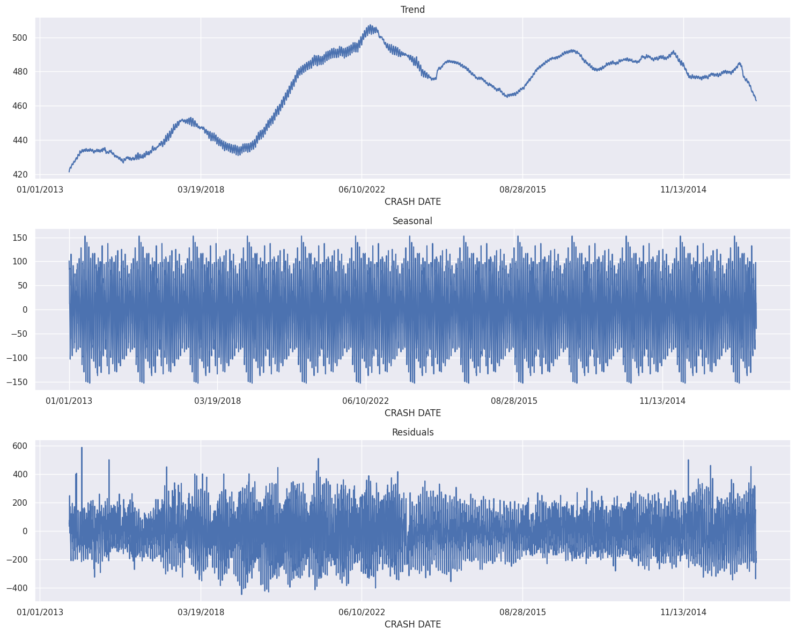
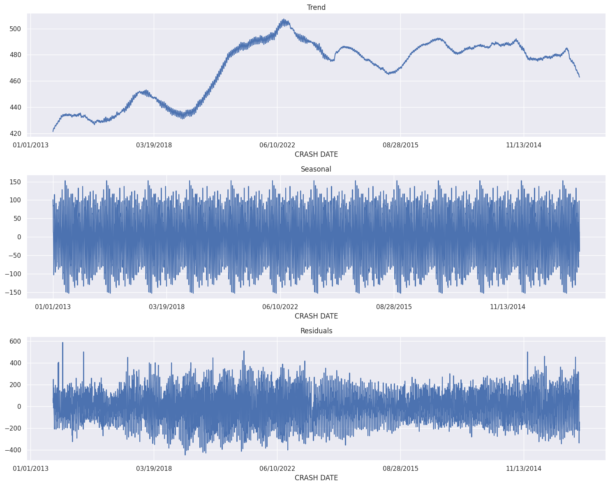

NYC Motor Vehicle Collisions — Tutorial & Findings
Download Notebook (.ipynb) Download Dataset (CSV)
This tutorial turns a large NYC crash log into decision-ready insights: when collisions spike, where they cluster across boroughs, and why they happen (top contributing factors), plus a daily time-series decomposition to separate trend from seasonality. The goal is to guide the “3 E’s” of safety: enforcement, engineering, and education.
What’s inside
1) Purpose / Objective
Use NYC collision records to surface temporal (hourly/seasonal), spatial (borough & hotspots), and behavioral (contributing factors) risk patterns that inform the “3 E’s.” Deliver clear visuals, a reproducible notebook, and concrete next steps for action.
2) Methodology
Hour-of-Day Profile
Extract Hour of Day from CRASH TIME and aggregate counts. The curve reveals commute peaks
and late-night risk windows that inform staffing and messaging.
 Commuter peaks (AM/PM) and a late-night shoulder.
Commuter peaks (AM/PM) and a late-night shoulder.
Borough Comparison
Tally crashes by BOROUGH to scope relative burden and budget needs. Combining counts with population/vehicle miles
would yield rates, but absolute counts already help target engineering work.
Top Contributing Factors
From CONTRIBUTING FACTOR VEHICLE 1 rank the most cited causes (with “Unspecified” kept but deprioritized).
Distraction/inattention often dominates preventable incidents.
 Driver inattention/distraction is typically #1—prime target for behavior-change campaigns.
Driver inattention/distraction is typically #1—prime target for behavior-change campaigns.
Daily Trend & Seasonality (STL)
Aggregate to daily counts and apply seasonal decomposition (STL). Separate long-run trend, recurring seasonal patterns, and irregular spikes for operational planning.
 
Trend, seasonal, and residual components clarify what’s structural vs transient.

Trend, seasonal, and residual components clarify what’s structural vs transient.
Hotspots (Map)
Using LATITUDE/LONGITUDE with Folium, we preview hotspots. The interactive map
below is embedded for quick scanning; the full exploration remains in the notebook.
3) Key Takeaways
The crash profile is actionable: time-bound enforcement during commute peaks, borough-focused engineering for high-density corridors, and distraction-first education. Seasonality suggests staffing adjustments by month.
- Immediate: HVE blitz on top 2 hours/day for 4 weeks; track y/y crash change.
- Engineering: Treat the top 10 intersections by density with quick-build measures; compare injury reduction vs controls.
- Analytics: Add exposure (traffic volume, weather) for rate-based KPIs; monitor factor-share shifts post-campaign.